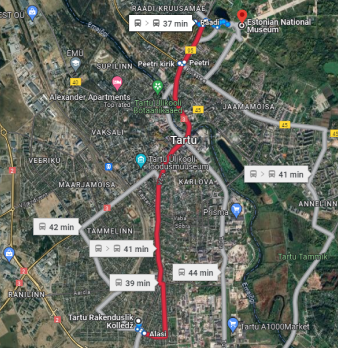

Every participant will be given a card that enables them to use public transportation for free to move between different competition locations.
As shown on the map, Tartu Vocational College and Tartu Variku School are next to each other.

Tartu Vocational College
Kopli 1, 50115 Tartu
Tartu Variku School
Piima 1, 50110 Tartu
Estonian National Museum is located at Muuseumi tee 2, 60532 Tartu.
Buses number 4 or 10 are the best choices to travel from the Vocation College to the National Museum. The travel will take approximately 40-45 minutes in total.
To check the public transportation departure times, you can either download an app called “Tartu bussiajad” or use Google Maps.